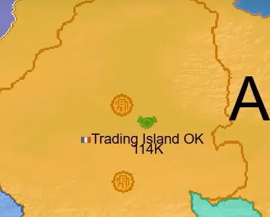
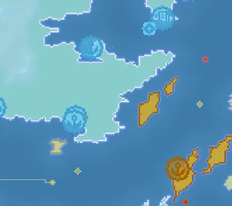

OpenFront.io Complete Beginner’s Guide
What is OpenFront.io?
OpenFront.io is a real-time strategy browser game where players compete to dominate the world map. The game combines territorial expansion, economic management, diplomatic alliances, and nuclear warfare in an engaging multiplayer experience. Victory is achieved by controlling 80% of all non-irradiated land, making it a race to expand while preventing others from reaching that threshold.
The game features simple controls but deep strategic mechanics, making it accessible to newcomers while offering complexity for experienced players. You play against other human players, AI bots, and Nations (stronger AI) in real-time matches that can last anywhere from 10 minutes to an hour.
Understanding the Basics
Game Objective
Your primary goal is to control 80% of the total map’s non-irradiated land to win. This means:
- You must expand your territory through conquest
- Nuclear weapons create radioactive zones that don’t count toward anyone’s percentage
- The first player to reach 80% wins the match
- Other players can be eliminated if they lose all their territory
Starting the Game
When you join a match, you’ll first select your starting position on the map. This is one of the most crucial decisions you’ll make:
Choose areas with:
- Plains terrain (light green) for fastest expansion
- Access to water for naval gameplay
- Multiple bots nearby for easy early expansion
- Distance from other human players
Avoid areas with:
- Mountain terrain (white) that’s slow to capture
- Being surrounded by multiple human players
- No access to water or bots
Core Game Mechanics
Population and Growth System
Population is the foundation of your empire. Understanding the population growth curve is essential for success:
- Each tile you own provides 3 population
- Population grows fastest at approximately 42% of your maximum capacity
- Growth slows significantly above 80% capacity
- Workers reproduce 30% faster than troops
Managing Your Population Balance: You must divide your population between two roles:
- Troops: Defend your territory and conduct attacks
- Workers: Generate gold income and reproduce faster
The optimal balance changes throughout the game, depending on your needs. In the early game we recommend to keep 80-90% of your population as troops for expansion and defense. As you progress, shift more to workers for economic growth and sustainability if the need for expansion diminishes.
Terrain Types and Combat
The game features three terrain types that significantly affect combat:
Plains (Light Green)
- Easiest and fastest to capture
- 15% speed bonus for attacks
- 10% fewer casualties for attackers
- Best for rapid early expansion
Highlands/Deserts (Tan/Orange)
- Moderate difficulty to capture
- Normal attack speed
- Standard casualty rates
- Balanced terrain for general gameplay
Mountains (White)
- Hardest and slowest to capture
- 25% speed penalty for attacks
- 30% more casualties for attackers
- Excellent for defensive positions and cities
Attack Ratio System
The attack ratio slider controls what percentage of your troops participate in each attack. This is crucial for managing your expansion:
- 10-30%: Conservative expansion, maintains strong defense
- 30-50%: Balanced approach for moderate expansion
- 75%+: Aggressive expansion but leaves you vulnerable
Higher ratios capture territory faster but leave fewer troops for defense. The optimal ratio depends on your situation and nearby threats.
Essential Buildings and Structures
Cities
Cities are your most important buildings, providing +25,000 population capacity each. They’re essential for scaling your empire:
Cost Structure:
- First city: 125,000 gold
- Second city: 250,000 gold
- Third city: 500,000 gold
- Fourth city and onwards: 1,000,000 gold
Placement Strategy:
- Build on mountain terrain for natural defense
- Place in central locations for maximum territory coverage
- Keep them away from borders and coasts to avoid easy capture
- Build early and often - they’re the foundation of growth

Ports
Ports unlock naval gameplay and provide crucial economic benefits:
Functions:
- Enable construction of warships for naval control
- Generate automatic trade ships that create gold income
- Allow amphibious attacks across water
- Trade income scales with distance - longer routes generate more gold
Trade Income Formula: Gold earned = 10,000 + 150 × (distance^1.1)
This means a trade route of 200 tiles generates about 57,434 gold, while a 20-tile route only generates 13,680 gold.

Defense Posts
Defense posts provide the strongest defensive bonus in the game:
Defensive Multipliers:
- 5× defense bonus in a 30-tile radius
- 6× bonus when built on mountains (stacks with terrain)
- 4.5× bonus on plains
- Multiple defense posts don’t stack
Strategic Uses:
- Protect cities and important infrastructure
- Control chokepoints and strategic passages
- Create defensive lines along borders
- Force enemies to commit massive armies to break through
Missile Systems
Missile Silos (1,000,000 gold) allow you to launch nuclear weapons:
- Atom Bomb (750,000 gold): Small area destruction
- Hydrogen Bomb (5,000,000 gold): Large area devastation
- MIRV (25,000,000 gold): Destroys entire nations, cannot be intercepted
SAM Launchers (1,500,000 gold) defend against nuclear attacks:
- 75% interception rate for Atom and Hydrogen bombs
- 75-pixel range around the launcher
- 7.5-second cooldown between interceptions
- Cannot intercept MIRVs
Warships
Warships control naval territories and trade routes:
Combat Capabilities:
- Start with 500 health, grow to 1,000 maximum
- 250 damage per shot every 2 seconds
- 130-tile targeting range
- Automatically patrol assigned areas
Strategic Functions:
- Capture enemy trade ships for economic warfare
- Destroy enemy boats attempting naval invasions
- Control sea lanes and strategic waterways
- Support your own trade routes
Early Game Strategy (First 10 Minutes)
Perfect Opening Sequence
The first few minutes determine your entire game trajectory:
- Wait 2-3 seconds for population to stabilize
- Set attack ratio to 30-35% for controlled expansion
- Capture all neutral territory in your immediate area
- Wait for 15,000+ population before attacking bots
- Build your first city as soon as you have 125,000 gold
Bot Rushing Strategy
Bots are your primary source of early expansion and gold:
Bot Characteristics:
- Always attack with exactly 50% of their troops
- Never build structures or use advanced tactics
- Provide significant gold rewards when defeated
- Can be easily surrounded for instant annexation
Optimal Bot Strategy:
- Target weakest bots first for easy victories
- Look for annexation opportunities - surrounding bots instantly captures them with zero losses
- Maintain 30-50% population capacity for optimal growth during expansion
- Save some troops to defend against human player attacks
Annexation Technique
Annexation is the most powerful conquest mechanic in the game:
How it Works:
- Completely surround enemy territory with your own
- Instantly capture all enclosed land with zero troop losses
- Works on bots, players, and neutral territory
- Cannot annex territory touching water or map edges
Strategic Priority:
- Always look for annexation opportunities before direct attacks
- Much more efficient than traditional combat
- Can eliminate entire players in one move
- Essential for bot rushing in early game

Diplomacy and Alliance System
Alliance Benefits and Risks
Alliances are crucial to survive in the early game.
When allies betray you, they suffer -50% defense for 30 seconds from all attacks, making them less likely to break alliances
All alliances are temporary. They will automatically expire after a couple minutes. Form them for mutual benefit, but be prepared for inevitable betrayal. Consider terrain when choosing allies to protect vulnerable borders and create strategic buffers.
Strategic Alliance Management
Early Game Alliances:
- Form defensive pacts with nearby players to focus on bot expansion
- Ally with players who share borders with strong bots
- Avoid alliances that force you into conflicts you can’t win
Mid Game Coordination:
- Share information about enemy nuclear programs
- Coordinate expansion into different regions
Late Game Considerations:
- Plan for inevitable betrayal as victory approaches
- Consider betraying when you can reach 80% land control
- Use alliances to prevent others from winning
Naval Warfare and Trade
Understanding Trade Mechanics
Trade ships automatically generate income between your ports and other players’ ports:
Trade Optimization:
- Build ports on multiple bodies of water for redundant income
- Longer trade routes generate exponentially more gold
- Allied players’ ports are prioritized for trade
- Trade stops automatically during combat and resumes after 5 minutes
Economic Impact: A single long-distance trade route can generate more income than dozens of short routes. Prioritize building ports on different continents when possible.
Warship Strategy
Warships serve both economic and military functions:
Economic Warfare:
- Capture enemy trade ships to steal their income
- Destroy enemy warships protecting their trade routes
- Control strategic waterways to dominate trade
Military Applications:
- Patrol key areas to prevent enemy naval invasions
- Support amphibious attacks on enemy coastlines
- Destroy enemy boats attempting to bypass your defenses
Nuclear Warfare
Nuclear Weapon Types and Uses
Nuclear weapons are the ultimate strategic tool for reshaping the battlefield:
Atom Bombs (750,000 gold):
- Small blast radius for precise strikes
- Best for destroying 1-2 enemy structures
- Cost-effective for tactical strikes
- Can be intercepted by SAM launchers
Hydrogen Bombs (5,000,000 gold):
- Large blast radius for area denial
- Destroys multiple structures in clustered areas
- Creates radioactive wasteland that doesn’t count for victory
- Can be intercepted by SAM launchers, but also outranges SAMs when aimed correctly
MIRV (25,000,000 gold):
- Destroys entire enemy nations
- Cannot be intercepted by any defense
- Most powerful weapon in the game
- Often decisive in late-game scenarios
Nuclear Defense Strategy
SAM Launcher Networks:
- Build overlapping coverage around cities and key infrastructure
- 75% interception rate provides good but not perfect protection
- Cannot stop MIRVs - the ultimate nuclear threat
- 7.5-second cooldown means multiple quick strikes can overwhelm them
Strategic Considerations:
- Nuclear deterrence: Having nukes prevents others from using theirs
- First strike advantage: Can eliminate threats before they respond
- Economic targeting: Destroy enemy cities and infrastructure
- Area denial: Create radioactive barriers to movement
Advanced Strategies
Mid-Game Transitions
As the game progresses beyond the initial bot rush phase:
Economic Development:
- Build 3-4 cities for massive population capacity
- Establish multiple ports for diversified trade income
- Develop nuclear capabilities for deterrence and offense
- Create defensive networks with SAM launchers and defense posts
Strategic Positioning:
- Control chokepoints to limit enemy movement
- Secure resource-rich regions with multiple bots and ports
- Build defensive depth with layered fortifications
- Maintain flexibility to respond to threats and opportunities
Late Game Victory Paths
Expansion Victory:
- Rapid annexation of smaller players and remaining bots
- Chain conquests to quickly reach 80% land control
- Speed over caution when victory is within reach
Nuclear Victory:
- MIRV enemy threats before they can reach 80%
- Destroy enemy infrastructure to cripple their growth
- Create radioactive barriers to prevent enemy expansion
Diplomatic Victory:
- Alliance manipulation to prevent any single player from winning
- Calculated betrayals when you can secure victory
- Information warfare to coordinate against the leading player
Quick Reference for New Players
Essential Hotkeys
- Space: Toggle terrain view (see plains/mountains/highlands)
- WASD: Move camera around the map
- C: Center camera on your territory
- Q/E: Zoom in and out
- Left-click: Attack adjacent territory
- Right-click: Open radial menu for building and diplomacy
- Ctrl + Left-click: Quick access to build menu
- Shift + Scroll: Adjust attack ratio in 5% increments
Critical Numbers to Remember
- 80%: Land needed for victory
- 42%: Optimal population percentage for fastest growth
- 25,000: Population added by each city
- 30%: Faster reproduction rate for workers vs troops
- 75%: SAM launcher interception rate
- 6×: Maximum defense multiplier from defense posts on mountains
Early Game Priorities (First 15 Minutes)
- Secure starting area: Capture all neutral land nearby
- Rush adjacent bots: Focus on weak targets and annexation opportunities
- Build first city: Essential population boost
- Establish coastal presence: Build port for trade and naval access
- Maintain defensive capability: Keep enough troops to deter human attacks
Common Beginner Mistakes to Avoid
- Over-expanding early: Leaving yourself defenseless against human players
- Ignoring economy: Not building enough workers or ports for gold income
- Poor city placement: Building cities on plains or near borders
- Alliance negligence: Either trusting too much or refusing all cooperation
- Nuclear unpreparedness: Not building SAM defenses or nuclear deterrence
Resource Management Tips
- Population growth peaks at 42% capacity - stay near this ratio when possible
- Workers are 30% more efficient at reproduction than troops
- Long-distance trade routes generate exponentially more gold
- Cities double in cost with each purchase - plan your expansion
- Nuclear weapons create permanent wasteland that doesn’t count toward victory
Conclusion
OpenFront.io rewards both strategic thinking and tactical execution. Success comes from understanding the interconnected systems of population growth, economic development, military expansion, and diplomatic maneuvering. Master the early game fundamentals of bot rushing and territory expansion, develop your economic base through cities and trade, and prepare for the complex late-game decisions around nuclear warfare and alliance management.
Remember that every game is different based on player behavior, map layout, and the dynamic interactions between multiple human opponents. Use this guide as a foundation, but be prepared to adapt your strategy based on the unique circumstances of each match.
The key to improvement is practice combined with understanding these core mechanics. Start with the basics, focus on solid economic development, and gradually incorporate more advanced strategies as you gain experience. Most importantly, learn from both victories and defeats to continuously refine your strategic decision-making.
Good luck conquering the world, commander!